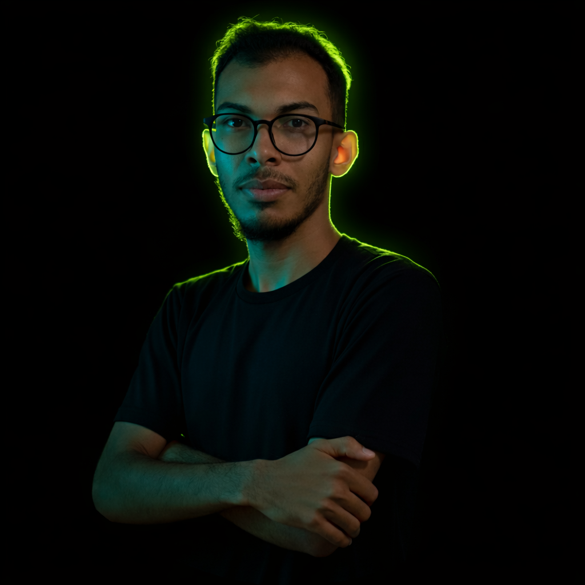

Carregando portfólio...
Profissional especializado em suporte técnico N1/N2, redes de computadores e infraestrutura de TI. Focado em resolver problemas e garantir a continuidade dos serviços com eficiência.

Fortaleza – CE
Conheça um pouco da minha trajetória profissional e valores
Profissional de Tecnologia da Informação com experiência em suporte técnico N1/N2, redes de computadores e telecomunicações. Atuo no diagnóstico e resolução de incidentes, manutenção de equipamentos, configuração de redes e cabeamento estruturado.
Tenho vivência em atendimento ao usuário, gestão de chamados, monitoramento de redes e análise de falhas. Contribuo para a melhoria contínua e confiabilidade dos sistemas em ambientes operacionais.
Trajetória construída com dedicação e resultados comprovados
Competências desenvolvidas na prática e em formação contínua
Competências essenciais para o dia a dia em TI e atendimento ao usuário
Explico problemas técnicos de forma simples, evitando tecnicês e orientando usuários passo a passo.
Identificação rápida de falhas, análise de causa raiz e resolução eficiente no primeiro contato.
Não apenas atendo chamados, busco soluções definitivas até o fim, evitando retrabalho e garantindo estabilidade.
Analiso logs, falhas e comportamento de rede para entender a causa real, não apenas os sintomas superficiais.
Gerencio múltiplos chamados simultâneos, priorizo tarefas com eficiência e mantenho processos bem documentados.
Colaboração ativa com setores de rede, campo e suporte, compartilhando soluções para otimizar a operação.
Antecipo falhas potenciais e sugiro melhorias contínuas nos processos, sem esperar que problemas se agravem.
Aprendo novas ferramentas rapidamente e me ajusto com facilidade a ambientes remotos, híbridos ou presenciais.
Busco evolução constante através de cursos, certificações e prática diária, acompanhando as mudanças do mercado.
Qualificações que reforçam minha expertise técnica
Redes Wi-Fi corporativas e gerenciamento de access points Ubiquiti.
Instalação, emenda e manutenção de redes de fibra óptica.
Boas práticas em gestão de serviços de TI.
Fundamentos sólidos em arquitetura de redes.
Base educacional em constante evolução
Formação focada em proteção de sistemas e dados.
Base em desenvolvimento e lógica de programação.
Formação técnica com foco prático em infraestrutura.
Estou disponível para novas oportunidades. Entre em contato pelos canais abaixo:
(85) 98511-0225
samuca.victor135@gmail.com
linkedin.com/in/samuel-nobre
Fortaleza – CE, Brasil